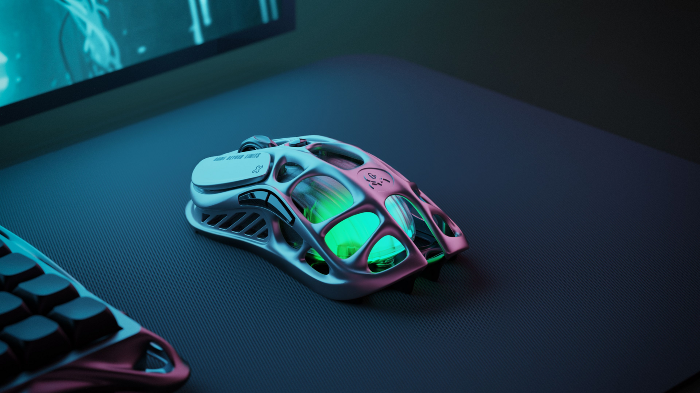
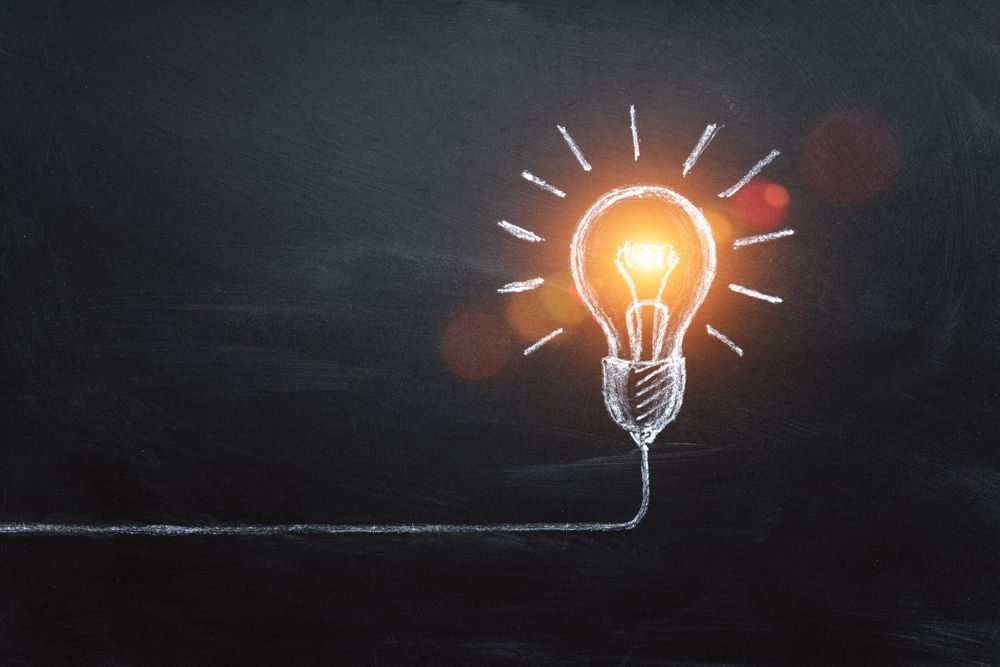

Обзор
Игровые Мыши
Технические спеки новинок + моё мнение о том, стоит ли это брать для серьезной игры.
Читать новостиТехнический взгляд на игровую периферию

Технические спеки новинок + моё мнение о том, стоит ли это брать для серьезной игры.
Читать новости
Как новая проводка влияет на стабильность курсора. Личный опыт.
Узнать больше